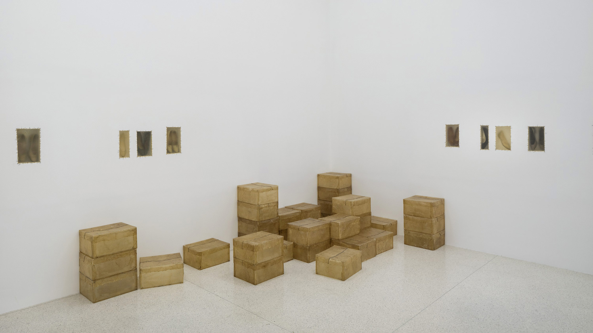
Doris Salcedo · 1992–2003 · Instalação
Atrabiliarios aborda a ausência das pessoas desaparecidas diante da violência na Colômbia. Doris Salcedo utiliza sapatos usados como evidências de vidas interrompidas. O MoMA relaciona estes elementos às pessoas desaparecidas durante o conflito colombiano e apresenta o trabalho da artista como uma forma de testemunho e reconhecimento das vítimas.
Na instalação pertencente ao SFMOMA, os sapatos distribuídos em nichos abertos nas paredes, cobertos por membranas translúcidas de bexiga de vaca, presas com fio cirúrgico. A membrana permite reconhecer os objetos, mas torna difícil a sua observação: os sapatos mantêm-se visíveis mas de forma imprecisa, tais como presenças a que não conseguimos aceder por completo. A instalação inclui também caixas vazias que continuam à espera de receber esses vestígios.
A escolha dos materiais influencia diretamente na construção do significado. O sapato remete ao corpo que não está presente, enquanto a membrana cria uma separação entre o objeto e quem o observa. O SFMOMA relaciona essa visibilidade incompleta com a condição pendente das pessoas desaparecidas, que se mantêm na memória de quem fica. A artista explica ainda que tenciona converter uma experiência privada numa coletiva, fazendo com que o desaparecimento seja reconhecido como uma questão social.
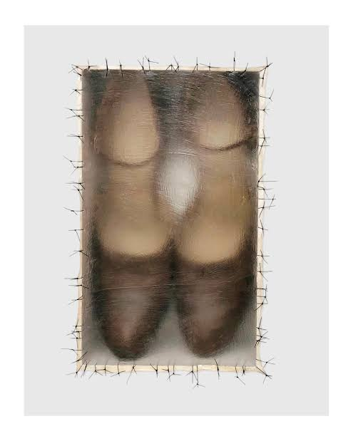
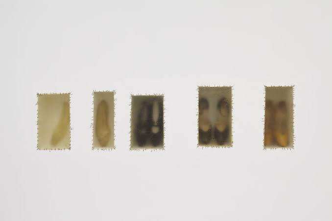
Rafael Lozano-Hemmer · 2015 · Instalação interativa
Level of Confidence foi criada em homenagem a 43 estudantes da escola de Ayotzinapa desaparecidos em Iguala, no México. O projeto utiliza o reconhecimento facial para manter os seus rostos presentes numa procura simbólica constante.
A instalação funciona por meio de uma câmara, um computador e um ecrã. Quando uma pessoa se posiciona diante da câmara, o sistema compara as suas características faciais com as imagens dos estudantes. Mostra então o rosto considerado mais semelhante e uma percentagem correspondente ao nível de confiança dessa avaliação.
De acordo com Lozano-Hemmer, a dimensão comemorativa da obra reside nessa procura persistente e na conexão entre as imagens dos alunos e as características de quem participa. O artista adapta, assim, tecnologias frequentemente ligadas à vigilância para focar a atenção para as vítimas.
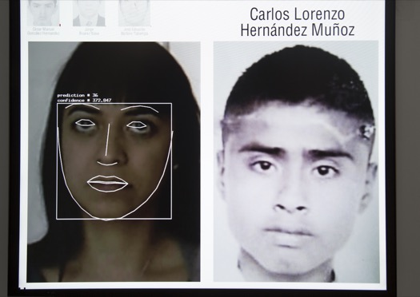
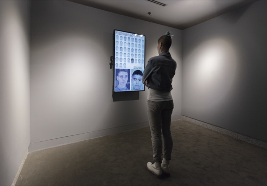
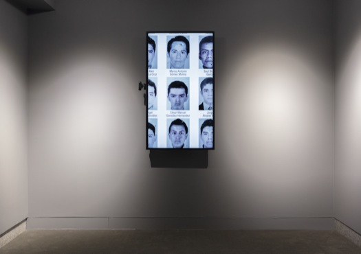
Jesús Cossio, Alejandro Olazo e Illari Orccottoma · 2023 · Projeto artístico
Retratos de Memória é um projeto artístico e social que reconstrói os rostos de pessoas desaparecidas no Peru durante o período de violência entre 1980 e 2000. Criado pela artista Jesús Cossio, pelo fotógrafo Alejandro Olazo e pela produtora Illari Orccottoma, surge como resposta à falta de fotografias em algumas famílias, utilizando as suas descrições e memórias para criar os retratos.
O processo consiste em entrevistas, nas quais os familiares partilham traços físicos, histórias e momentos da vida passada. A equipa trabalha ainda em conjunto com organizações responsáveis pela busca, identificação e devolução de restos mortais. Assim, o projeto inclui diferentes situações, como famílias que já obtiveram os corpos de seus entes queridos.
Na reportagem do CICV, Paula Aguilar Yucra descreve a entrega do retrato do seu irmão como uma sensação de reencontro. Ao pedir também um retrato da mãe, conta que deseja colocá-lo em casa, para poder vê-la e despedir-se ao sair de casa. Revelando então o espaço que a imagem pode ocupar nas relações familiares.
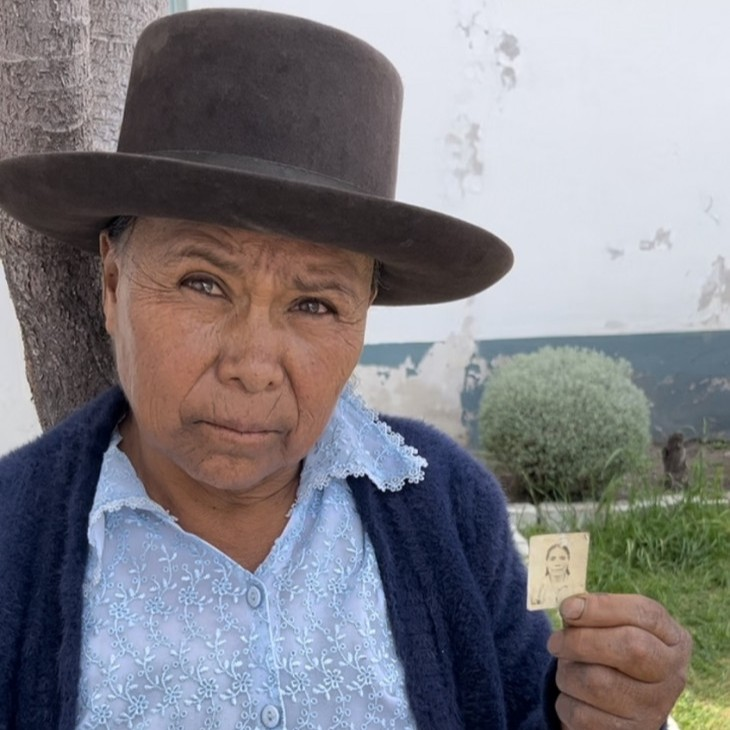
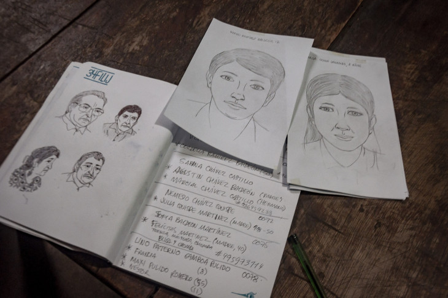
Jaime Black, artista Métis · 2019 · Instalação em espaço público
O REDress Project é uma instalação artística que homenageia as mulheres e meninas indígenas desaparecidas e assassinadas. Criado pela artista Métis Jaime Black, o projeto utiliza vestidos vermelhos vazios para evidenciar a sua ausência no ambiente público. Na exibição de 2019, no National Museum of the American Indian, em Washington, foram pendurados cerca de trinta vestidos ao longo de um caminho da parte externa do museu.
O vestido sugere a existência de um corpo, mas permanece vazio. É através da relação entre a peça de roupa identificável e a ausência de quem a poderia usar que a instalação constroi o seu significado. Na descrição oficial do projeto, Black menciona que procura evocar uma presença ao marcar a ausência e chamar a atenção para a dimenção de género e de raça na violência contra as mulheres indígenas.
Na reportagem do museu, a artista apresenta a instalação como um espaço de conscientização, troca de experiências e possível apoio às famílias, proporcionando uma representação física a uma ausência vivencialmente sentida.
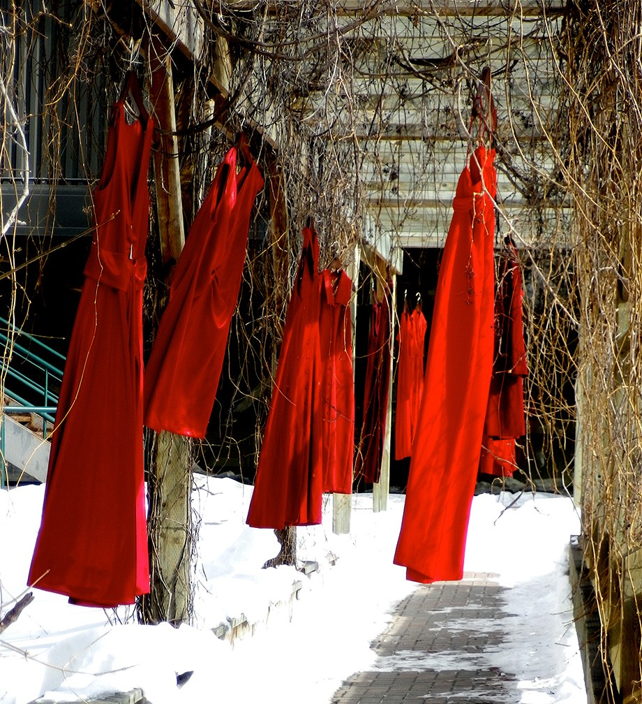
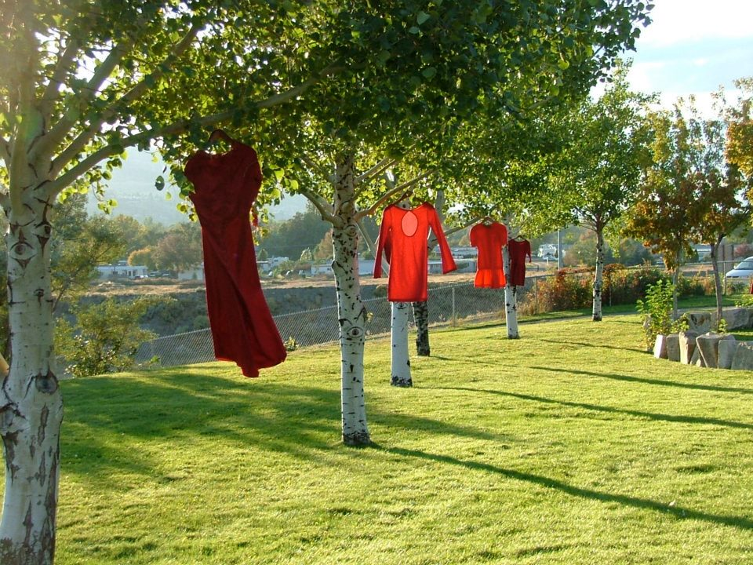
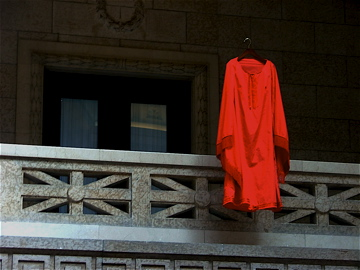
Christian Boltanski · 2010 · Instalação
O Archives du Cœur, reúne gravações dos batimentos cardíacos de pessoas de várias partes do mundo. Christian Boltanski deu início a esta recolha em 2008, criando um arquivo sonoro que a organização responsável pela instalação Benesse Art Site Naoshima, define como uma prova da presença de cada participante.
A instalação é composta por três espaços, a Heart Room, que recebe uma instalação artística, uma sala de gravação e uma sala de audição. Os visitantes podem registrar os seus próprios batimentos cardíacos, acompanhados por uma mensagem pessoal, e juntá-los ao arquivo. Na sala de audição, uma base de dados permite procurar e ouvir as gravações já existentes. Dessa forma, a participação contribui para formação contínua da obra.
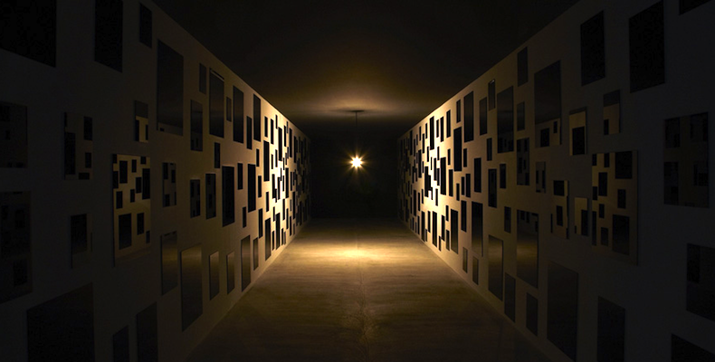
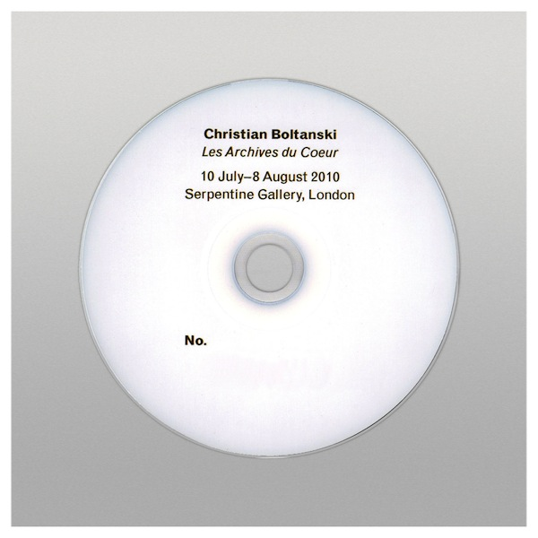
Candy Chang · 2011 · Intervenção participativa num espaço público
O Before I Die surgiu em Nova Orleães, em 2011, após Candy Chang ter sofrido a perda de uma pessoa querida. A artista transformou uma parede de uma casa abandonada num espaço onde qualquer pessoa podia completar com giz a frase “Before I die I want to…”. O projeto convida a refletir sobre a vida e a partilhar desejos num espaço acessível a todos que circulam por ali.
É a contribuição do público que constroi o conteúdo da intervenção. A artista estabelece a pergunta e a estrutura da parede, enquanto os participantes adicionam vivências, prioridades e expectativas. Dessa forma, a parede torna-se num espaço de expressão individual e de contacto com outras pessoas.
A intervenção ultrapassou Nova Orleães e foi recriada por comunidades em diferentes partes do mundo. Foram realizadas mais de 5 000 paredes em mais de 75 países. Assim, a participação acontece também na criação de novos espaços, cujo conteúdo reflete os desejos de cada comunidade.
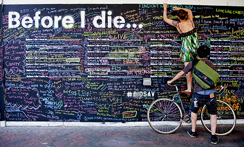
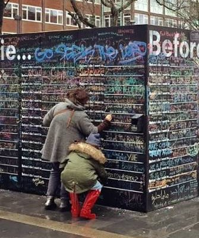